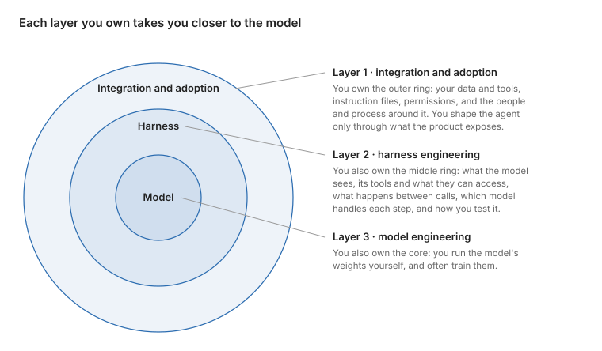

This is the short version of How to Customize Agents, and When to Own Them, which has the full evidence and more examples.
Agents keep making the news. In September 2025, MIT’s CRESt found a better fuel-cell catalyst after more than 900 experiments, and this September about 10,000 of OpenAI’s agents settled the Navier–Stokes problem, one of the Millennium Prize problems. Then you try an agent in your day-to-day work, and it does not work nearly as well. It keeps needing you to steer it, and it reports success when the work is only half done.
Why the difference? Part of it is the model and the compute behind it. The rest is that the results in both problems could be checked automatically, and each agent ran inside a system built around that check: robots made and tested the catalysts CRESt proposed, and a proof checker, Lean, confirmed every step of the proof OpenAI’s agents wrote. Most business work is not like that. No program can tell you whether a contract summary left out the clause that matters, or whether a support reply actually solved the customer’s problem.
So you may need a lot of customization before an agent works reliably for you: the context and tools it needs, automated checks wherever the work allows them, and people to review the rest. Which customizations pay off, and when should you stop buying and start building your own agents or models? I sort the options into three layers, from the outside in.

Layer 1: integrate an off-the-shelf agent
You start with an off-the-shelf agent, such as Claude Code or Codex, and connect it to your tools and company knowledge, and give it instructions. Software teams are furthest along, so most of the evidence here comes from them. The agent writes faster than people can review: across 22,000 developers in 2026, Faros found median review time up fivefold. As Cloudflare’s own AI reviewer shows, AI reviewers and LLM judges help as a first pass, but cannot replace human review.
Faster people do not make a faster business on their own. Across more than 400 companies, DX found AI usage up 65% while median pull-request throughput rose only 7.76%. The gains come from redesigning the work. In a 2026 randomized trial of 515 startups, all had the same AI tools, and some, picked at random, were also shown how other firms had reorganized their work around AI. Those firms earned 1.9 times the revenue.
Layer 2: build your own agent
Off-the-shelf agents are built to work beside a person: Stripe found tools like Cursor and Claude Code “optimized for working through code changes as a companion to engineers”, so it built its own agent for unattended work. It now merges more than 1,300 of agent-generated pull requests a week, and a person reviews each one before it merges. Ramp’s own background agent writes about 30% of merged pull requests in its frontend and backend repositories.
Like Stripe and Ramp, you still call a frontier model through its API, but you own the harness around it: what the agent sees at each step, the tools it can reach, the workflow between model calls, and the checks on its work.
Much of that work goes into making the agent reliable, because for all their attention layers, models still miss what is in front of them. In a July 2026 study of over a thousand failed terminal-agent runs, 58% had the information they needed and did not use it, often by acting on an assumption they never checked. A harness narrows the gap with short, targeted context, a plan of key steps, and a second agent that tests each claim. It does not close it, so treat “done” as a claim and check the result.
How much to automate depends on how bad an uncaught mistake could get, and who is accountable for it. Where a mistake is caught quickly and can be undone, you can automate a lot. Spotify lets its coding agent’s changes merge unreviewed if they pass the tests, and the team that owns those tests answers for anything that slips through. Where a mistake is costly and permanent, automate selectively. At an invoice-factoring company I worked with, we built a model that buys the invoices it scores as low-risk and sends the risky ones to people to review, because a bad purchase is money that may never come back. By replaying past invoices, we found how far to turn the automation dial before the model put more money at risk than people did. Shadow mode and a 1% test confirmed it.
Layer 3: own the model
Sooner or later, harness changes hit diminishing returns on your eval. You can wait for the next frontier release, or own the model. The first thing to try is running an open-weight model as it is, on your own infrastructure. It pays when your traffic is high and steady enough to keep GPUs busy.
Training your own model can pay off when your proprietary data gives you an edge public data can’t. Bridgewater and Thinking Machines tuned an open Qwen3 model that beat Claude Opus 4.8, the best frontier model they tested, on six financial-judgment tasks, at 13.8 times lower cost to run. My colleagues and I have repeatedly seen small open models, fine-tuned on our own examples, beat frontier models on narrow tasks. The entry price keeps falling, too: a 1.5B reasoning model was RL-trained for $9.
Which training method to use depends on the signal you have:
- Example trajectories: supervised fine-tuning is inexpensive and teaches format and behavior. s1 beat o1-preview on competition math after training on 1,000 examples. It can also erase what the model knew, so rerun your other evals afterward.
- An automatic check: reinforcement learning with verifiable rewards (RLVR). If you built an eval for your agent, you already have its tasks and a first version of its verifier. Harden the verifier before you train against it, because the model learns whatever shortcuts it allows.
- A stronger model: on-policy distillation, where the teacher grades the student’s own attempts, matched RL at about a tenth of the GPU hours in Qwen3’s report.
The eval is what lasts
Most numbers in this post will date within a year. What lasts is the eval: a set of real tasks, and an automatic check that scores each attempt. The same check measures the agent, decides at run time which outputs go to a person, becomes the reward when you train your own models, and is the target that a self-improving loop climbs.
Yet in one 2026 survey, only about half of teams checked their agents’ performance against an eval benchmark. The headline agents worked where results could be checked automatically. A business needs to build those checks where it can. Before you add the next tool, decide how you will know the agent got it right.